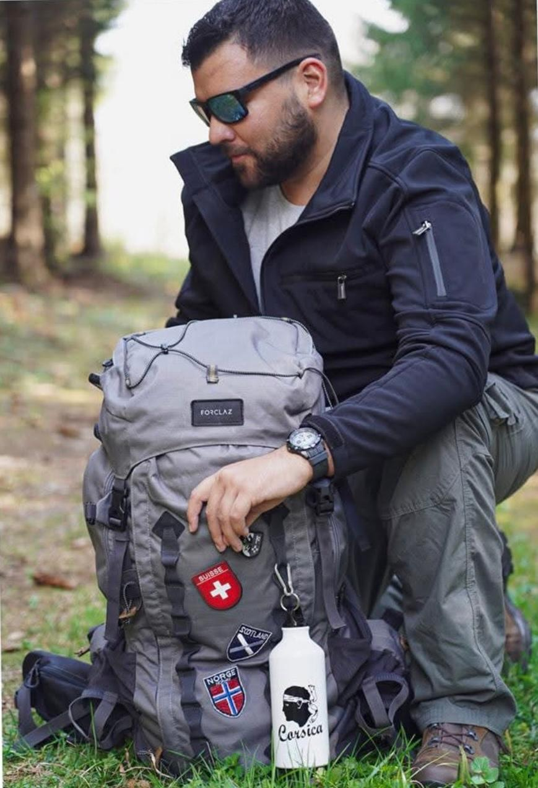

Influenceurs, journalistes et partenaires médias qui relaient l'aventure de Roland Crettaz.

Influenceur voyage et outdoor basé en Valais, Jo Garcia a relayé la Neuro-Odyssée auprès de sa communauté et partage les coulisses de l'aventure de Roland Crettaz.
Voir la vidéo InstagramJournaliste, blogueur ou créateur de contenu — Roland est disponible pour des interviews, témoignages et collaborations médias.
Contacter Roland ↗